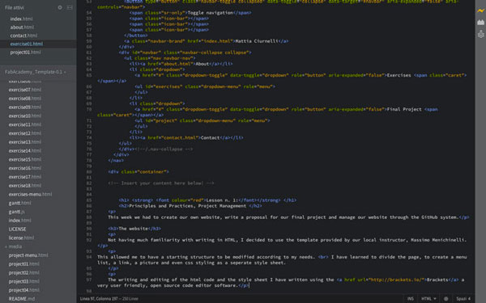
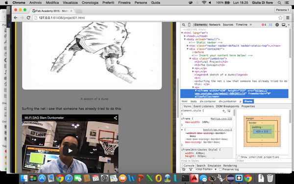
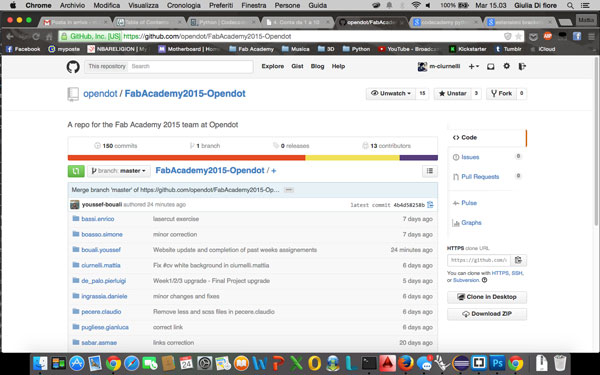
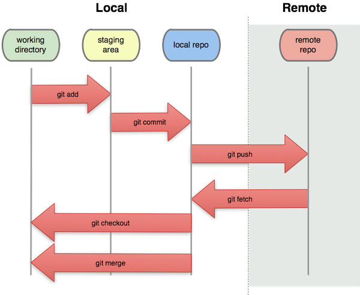
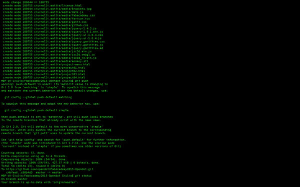

This week we had two assignments:
To se my potential idea for the final semester project please see the Concept page on the Final Project menu, for the sketch you can see the page of week 2 assignment.
Not having much familiarity with writing in HTML, I decided to use the template provided by our local instructor, Massimo Menichinelli.
This allowed me to have a starting structure to be modified according to my needs.
I have learned to divide the page, to create a menu list, a link, a picture and even css styling as a seperate style sheet.
For writing and editing of the HTML code and the style sheet I have used Brackets, a very user friendly, open source code editor software.

As already mentioned, having little familiarity with HTML, a key tool that helped me a lot was the site W3School , where I could see all the tags reference.
Another very usefull tool is the function "inspects element" in Google Chrome. This function allows you, after selected an object, to see directly from the page the structure in html and the information from the css of it.

GitHub is a version control software.
In the first lesson we learn how GitHub work, wich type of command we need and the correct procedure to upload our work.
We have our online repository, with a folder for each student, where we save the file we create, the modified files and their previous versions.

Commands, which are inserted from the terminal, are many, the main ones are:
Schematically, the operation of GitHub can be represented in this way:

GitHub then allows you to work on your pc and once finished, through the terminal and the appropriate commands, send your work in the online repository and make it available to other users.

Despite some initial difficulties, once you understand how it works and what commands to use GitHub, proves to be a valuable tool for managing files.